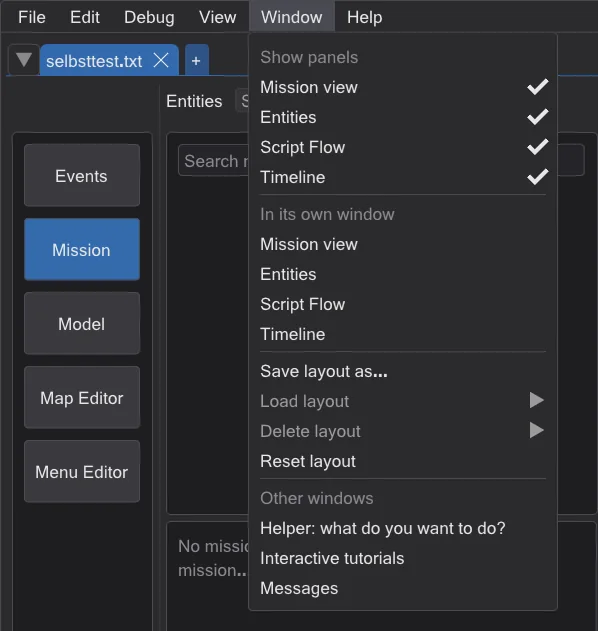
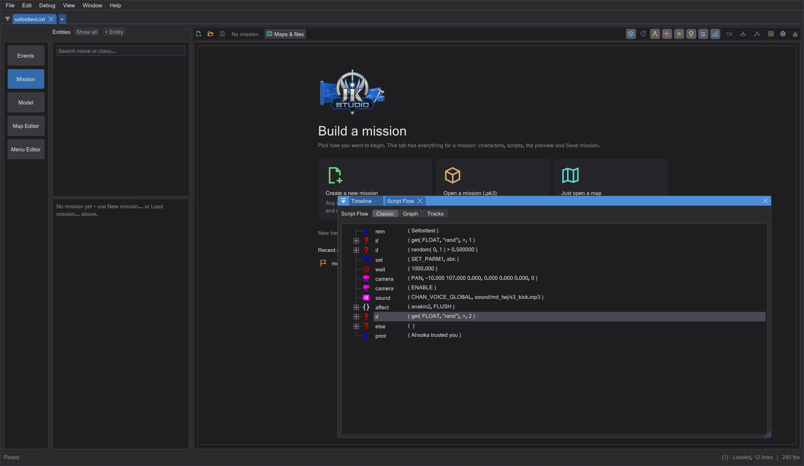
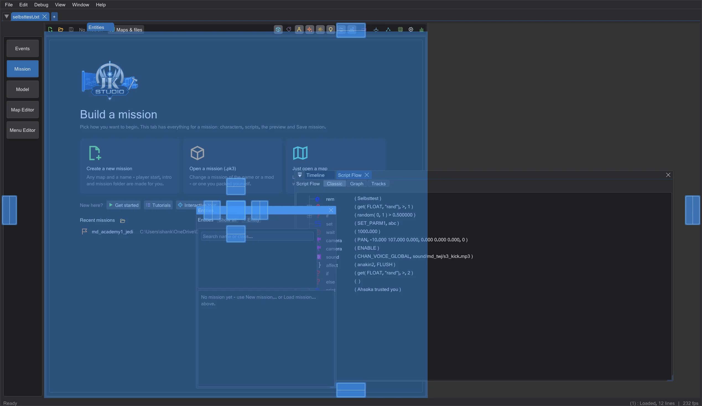

Arrange windows and screens
Take any panel out of the main window, put it on a second screen, combine panels as you like and save the arrangement under a name - per area.
Every area - Události, Mise, Model, Editor map and Editor menu - is made of panels. As long as you move nothing, every panel stays in its place in the main window: the standard layout, exactly as before.
Take a panel out#

Obrázek je zatím anglicky- 1
Open the menu Window (in the map editor it is the last menu, after NetRadiant's).
- 2
Under In its own window click the panel, for example the timeline. It becomes a window of its own; its place in the main window goes to its neighbours - the mission view gets taller.
- 3
Drag the window by its title bar out of the main window: it becomes a real Windows window and can go onto a second screen. It keeps drawing there - the 3D views and the real-time light of the map editor included.
Show panels hides a panel completely; its space goes to the neighbours as well. The section Other windows opens the helper, the tutorials and the messages - they are windows of their own anyway.
Combine panels#

Obrázek je zatím anglickyDrag the window of one panel onto the window of another: markers appear. Drop it on the middle marker and both become tabs of one window; drop it on an arrow and they sit side by side or one above the other. The dividers between them can be dragged, a tab can be dragged out again. This works for the panels of one area; dialogs such as Find stay on their own.
Dock a panel back#

Obrázek je zatím anglicky- Drag the window onto its old place in the main window (highlighted, Release to dock back here) and release it.
- Or close the window with its x - the panel goes back to its place, nothing is lost.
- Or click the panel under In its own window again.
Save, load and reset layouts#
Each area has its own layouts. Save layout as stores which panels are in their own window or hidden, where these windows are, on which screen, and how they are combined. Load layout switches to a saved layout, Delete layout removes one, Reset layout brings every panel of the area back to the standard layout. The current layout of every area is kept in the settings and is there again at the next start.
Screens that change#
- A screen is unplugged or arranged differently: windows that were on it come back onto the screen of the main window, at their size.
- A screen is smaller than a window: the window is made just small enough to fit.
- A window moves onto a screen with a different scale (100 %, 150 % ...): its size and text follow the scale of that screen.
Map editor#
NetRadiant's layouts stay the default (Preferences > Layout). In Regular the XY view, the console, the camera and the texture browser (or the built-in entity window) can be taken out, in Split the four views; their place goes to the neighbours like when a view is hidden in NetRadiant. In Floating the views float anyway. A view in its own window draws there with everything it shows in the main window; a click into it makes it the active view, keyboard shortcuts and free look then work in that window - on every screen.
Editor menu#
Prvky, Canvas and the column Hierarchy, text, properties are panels of their own - for example the canvas large on a second screen while the text stays in the main window. This works in the layout with the tabs on the right; with the text below (preferences) the editor stays as it is.